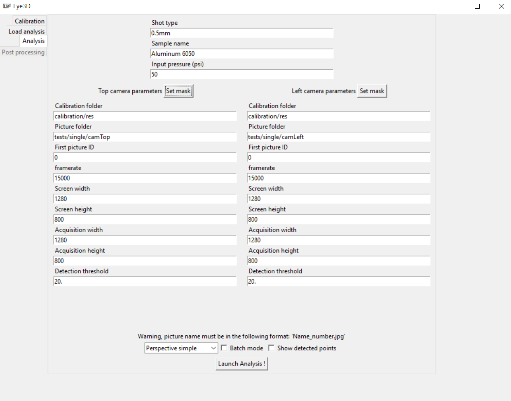
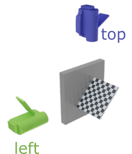
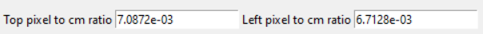
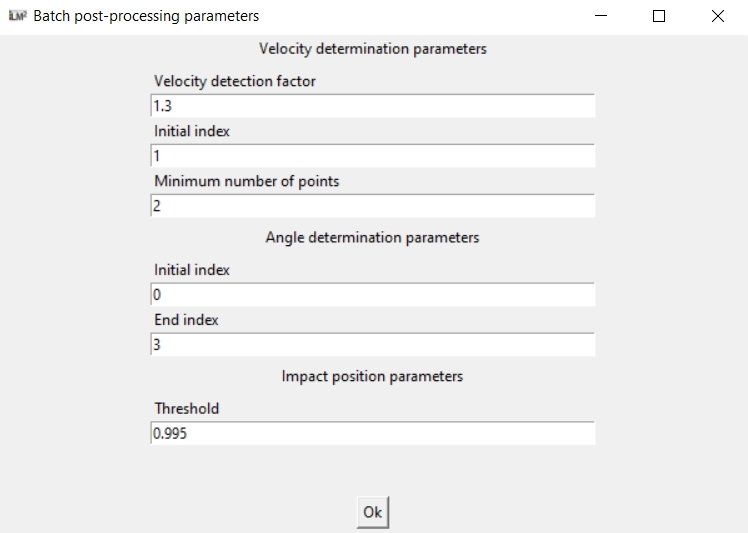

Using the GUI¶
The Analysis tab provides an interface for the shot detection and 3D reconstruction using the previously developped methods.
The first form at the top should be filled with the experiment parameters such as the shot media type (string), the sample name (string) and the input pressure in psi (float). Those data will not be used for the analysis but will be exported in the final report to better identify the conditions of each test.
The form in the middle is composed of two columns: one for the top camera at the left and the other for the left camera at the right.
The “Set mask” button opens a new window to select the mask size to remove reflective surfaces from the analysis. The mas only fills a part of the picture with 0’s so that it is not accounted for in the detection procedure. You can move either the mask width or height slider to chose the mask size.
The following parameters should be entered for each camera:
The camera calibration folder: containing the files generated by the calibration procedure for each camera. The files hould be named “cam_top” and “cam_left” for the top and left camera respectively.
The picture folder: each picture should be named with the following format “Name_picNumber” where picNumber is the picture number ordered following the shot sequence. Only .jpg and .tif format are supported yet.
First picture ID: (int) corresponds to the first value of picNumber that should be considered in the analysis.
Framerate: (float) is the camera number of frame per second.
Screen width and height: are the camera screen width and height in pixel (without any resizing)
Acquisition width and height: are the width and height of the acquired picture in pixel. Warning: it is not necessarily the effective picture pixel size as it should be the dimension written on the information banner (and should therefore not account for the length of the banner). See the picture below for more explanation.
Detection threshold: is the threshold for which the value of the diference between the actual image and the background image should be considered to belong to the shot.
The final bottom section is composed of several analysis option. The first one is the method to use, either accounting for perspective or not, with an optimized reprojection error or not. If the “No perspective” option is gathered, the two forms bellow will appear. A float giving the pixel to cm ratio should be entered.
The “Batch mode option” provides a way to make an analysis on a large number of experiments, using the same analysis parameters (coul dbe usefull for repeatability analysis). When ticked, the user is asked to ender the folder path containing all the analysis to be performed. Each analysis folder should contain two folder (one for each camera), with the name given by what was input in the “Picture folder” form of each camera.

The batch set-up button opens a new window to set the post processing parameters to be used on the whole batch. Please refer to the Post-processing section for more details.
Finally the “Show detected point” option will superimposed the detected shot positions on each shot picture to check wether the shot detection threshold and the masking area for each camera should be adjusted.